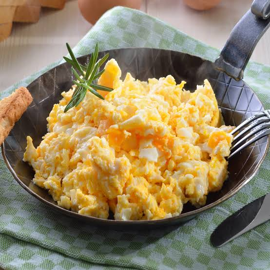

Recipe for Scrambled Eggs

Home
Description
This recipe shows you how to cook scrambled eggs. Eggs are a good meal to eat as a start to your day, as this recipe explains the steps in order to cook scrambled eggs
Ingredients
- 2 large eggs
- Butter or olive oil
- Milk, cream, or water
- Salt or black pepper
Steps
- Crack the eggs into a small bowl, add the milk, salt, and pepper, and beat vigorously with a fork until the mixture is completely uniform.
- Melt the butter in a small non-stick skillet over medium-low heat until it is hot and bubbling.
- Pour in the egg mixture and let it sit for a few seconds, then use a spatula to gently push and fold the eggs from the edges to the center to form soft curds.
- Take the skillet off the heat while the eggs still look slightly wet, as they will finish cooking on the warm plate.